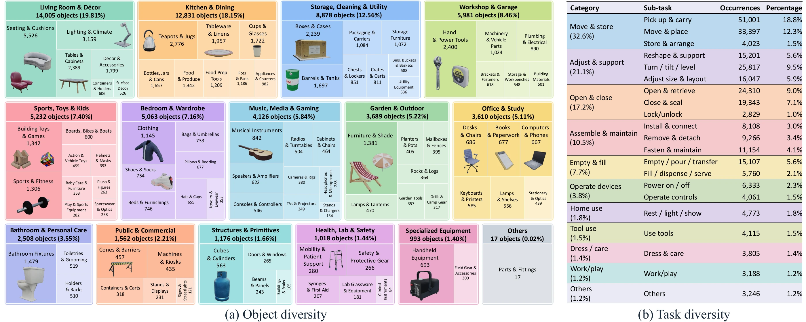
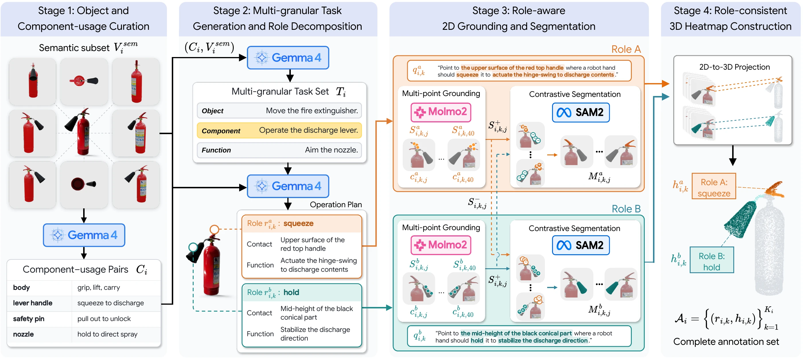

DUALingo
A Dual-Hand Instruction-Guided Dataset for Affordance Grounding on 3D Objects
For each object and free-form task, DUALingo annotates two cooperative roles, each an action verb with a heatmap on the object surface (role a, role b).
Abstract
Affordance grounding localizes where an agent should interact with an object to perform a task. Many everyday manipulation tasks, however, require bimanual affordance, in which two hands assume complementary and cooperative roles to accomplish a shared goal. Existing 3D affordance datasets primarily ground single interaction regions, and manually annotating dual-hand, cooperative contacts does not scale. To address this gap, we introduce DUALingo, a large-scale dataset for task-conditioned, role-aware bimanual 3D affordance grounding on diverse everyday objects. DUALingo represents each task as two cooperative, hand-agnostic roles, each grounded as a heatmap on the object surface. It contains 271K free-form tasks on 71K objects, generated by a fully automated pipeline of open-weight foundation models without human labeling. Expert ratings and a validated LLM judge confirm the quality of the resulting annotations. Trained on DUALingo, existing 3D affordance models learn to ground both cooperative roles from natural-language instructions, with the best-performing model achieving a more than threefold improvement in aIoU over the zero-shot baseline, from 10.3 to 37.8. Robotic manipulation demonstrations illustrate the actionability of the predicted bimanual affordances in performing cooperative tasks. These results position DUALingo as a scalable foundation for learning everyday bimanual affordances. Dataset and code will be made publicly available.
Explore DUALingo in 3D
Dataset
271K free-form bimanual tasks on 71K objects, in three task families that differ in the level of abstraction of the instruction.
Object-level
Manipulates the entire object as a single unit.
Move a chair · rotate a table · pick up a bucket
Component-level
Manipulates a specific component of the object.
Remove a lid · open a drawer · unscrew a cap
Function-level
Manipulates an object to achieve a high-level functional goal.
Open a book for reading · tilt a mug for drinking

Comparison with existing affordance datasets
| Dataset | 3D | Free-form | Bimanual | Role-aware |
|---|---|---|---|---|
| 3D AffordanceNet CVPR 2021 | ✓ | – | – | – |
| LASO CVPR 2024 | ✓ | ✓ | – | – |
| Affogato ECCV 2026 | ✓ | ✓ | – | – |
| DA2 RA-L 2022 | ✓ | – | ✓ | – |
| DualAfford ICLR 2023 | ✓ | – | ✓ | – |
| 2HANDS ICCV 2025 | – | ✓ | ✓ | – |
| DHAGrasp arXiv 2025 | ✓ | – | ✓ | – |
| BiPreManip CVPR 2026 | ✓ | – | ✓ | – |
| DUALingo Ours | ✓ | ✓ | ✓ | ✓ |
Annotation Pipeline
Four stages, from rendered views of an object to a pair of 3D role heatmaps.
Pipeline overview

Annotation quality
Expert ratings and a validated LLM judge confirm the annotation quality.
| Criterion | Human 1K | LLM 1K | LLM all | AC1 J–E | AC1 E–E |
|---|---|---|---|---|---|
| Task validity | 94.1 | 93.3 | 92.5 | 0.82 | 0.81 |
| Role validity | 97.6 | 96.5 | 95.7 | 0.93 | 0.93 |
| Heatmap quality | 87.4 | 90.3 | 89.7 | 0.74 | 0.74 |
Human (1K) averages five expert ratings; LLM (1K) evaluates the same samples; LLM (all) evaluates the full corpus. Scores normalized to 0–100. AC1: Gwet's agreement between the judge and the experts (J–E) and among the experts (E–E).
Benchmark
Trained on DUALingo, three 3D affordance models learn to ground both cooperative roles.
| Method | aIoU ↑ | AUC ↑ | SIM ↑ | MAE ↓ | Role ↑ |
|---|---|---|---|---|---|
| OpenAD | 3.9 | 50.4 | 37.9 | 0.332 | – |
| Dual-OpenAD | 25.4 | 70.4 | 53.7 | 0.275 | 73.1 |
| PointRefer | 7.3 | 51.3 | 32.7 | 0.332 | – |
| Dual-PointRefer | 34.8 | 78.6 | 61.8 | 0.198 | 79.1 |
| Espresso-3D | 10.3 | 53.7 | 39.8 | 0.331 | – |
| Dual-Espresso-3D | 37.8 | 79.5 | 62.8 | 0.191 | 78.8 |
Original models are evaluated zero-shot; Dual models (shaded) are fine-tuned on DUALingo, averaged over three seeds. Best results in bold.
Bimanual Manipulation
Dual-Espresso-3D, trained on DUALingo, predicts the two roles on unseen objects from YCB, OakInk2, and PhysX-Mobility, and the predicted regions guide two Franka arms with scripted controllers in ManiSkill3. Videos play at 2× speed.
BibTeX
@article{lee2026dualingo,
title = {DUALingo: A Dual-Hand Instruction-Guided Dataset for
Affordance Grounding on 3D Objects},
author = {Lee, Ming-Lun and Li, Yi-En and Su, Feng-Dian and Lee, Ming-Han
and Wu, Kun-Ru and Czarnecki, Krzysztof and Tseng, Yu-Chee},
journal = {arXiv preprint arXiv:XXXX.XXXXX},
year = {2026}
}